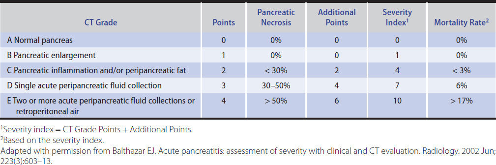
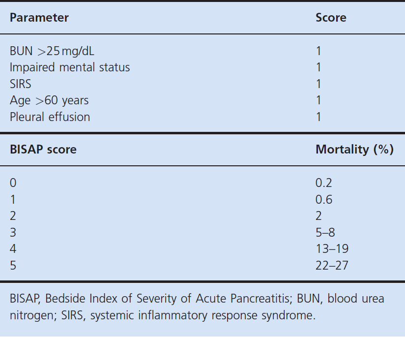

後續處置
檢查結束後，你判斷此位患者是急性胰臟炎，急性胰臟炎若不及時處理可能危及性命，因此接下來你立即著手進行後續治療。
1. 評估嚴重性
- CTSI (Severity index for acute pancreatitis by CT scan)

- BISAP (Bedside Index of Severity in Acute Pancreatitis)
- 評估時間：住院初24小時
- 項目
- BUN >25
- mental status 受損
- SIRS
- 老：>60歲
- Pleural effusion

2. NPO
急性胰臟炎患者須先禁食，但也要盡快補充營養
- Mild pancreatitis：不再嘔吐後可以用嘴巴進食低油脂的固體食物
- Moderate to severe pancreatitis：24-48 小時內用鼻胃管或鼻腸管補充腸道營養，若無法接受腸道餵食可以使用 Total parenteral nutrition（TPN）
3. Supplemental O2
不管有沒有 hypoxia 都可以
4. Nasogastric tube suction
針對嘔吐患者
5. 疼痛控制
可以使用 opioids 如 morphine、fentanyl
6. 補水
- lactated Ringer’s、normal saline
- 最初：bolused at 15–20 mL/kg
- 接著：2–3 mL/kg per hour
- 維持 urine output >0.5 mL/kg per hour
7. 注意離子恆定
8. Antibiotic therapy
如果沒有感染跡象，不需要給預防性抗生素
教案總結
急性胰臟炎（Acute Pancreatitis）的發生原因主要與胰臟內部酵素的過早活化有關，這些酵素原本應該在腸道中活化，但在急性胰臟炎的情況下，卻在胰臟內被活化，引發胰臟組織發炎。這種情況下小胰管受損，導致胰液滲漏，又因為胰臟缺乏包膜而更容易擴散到周圍組織，引發周邊廣泛的發炎反應。
臨床上，急性胰臟炎的常見成因主要包括：
- 膽結石：膽結石卡在膽胰管交界處。
- 酒精濫用：酒精濫用更常導致慢性胰臟炎，但在一定劑量下（如每天約 40 克或以上），也會顯著增加急性胰臟炎的風險。
- 高血脂症：特別是在懷孕期間，高血脂症可能是急性胰臟炎的重要誘因。
- 創傷：創傷是兒童的急性胰臟炎主要成因；而內鏡逆行性膽胰攝影術（ERCP）術後也可能併發急性胰臟炎，是一種常見的醫源性成因。